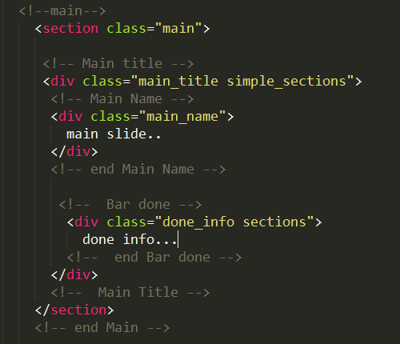
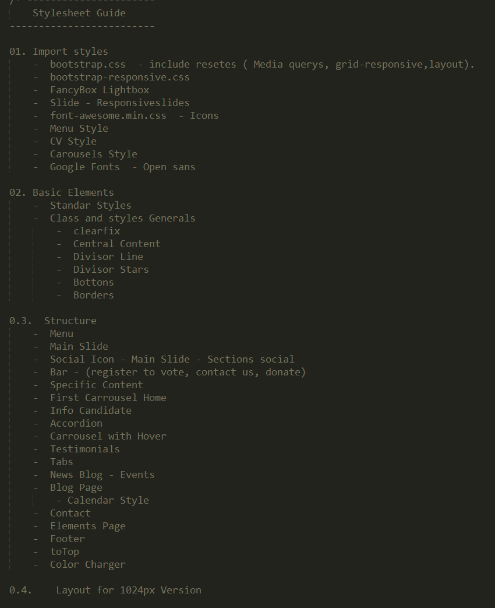
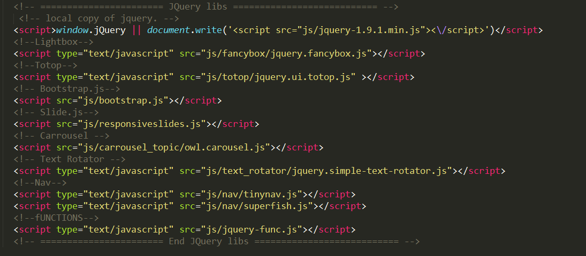

Thank you for purchasing my theme. If you have any questions that are beyond the scope of this help file, please feel free to email via my user page contact form here. Thanks so much! this is my e-mail: jmartinez@imaginacionweb.net
This theme has a responsive design with variation of column layouts depending on the page.This theme is based on bootstrap 3.0 1170px (12 columns), which will help streamline any customization you want to perform. If you are unfamiliar with grid system, be sure to read about it here.
The main structure of this site is wrapped in a "container" div, followed by a "row-fluid" div. These div Within each section is given a site's home grid size equaling all 12 columns long.
This topic has the following structure has aslide or section, and footer content, this is the following structure:
If you would like to edit the color, font, or style of any elements in one of these columns, you would search the classes´ names or id´s names and go to css, search the name selected and make the changes that you want :
Note: If you want change something about I.E. in the folder folder "css" there is one called "ie".
we are using a master file of CSS (style.css). he ten additional stylesheets. Style sheets are located in the folder "CSS" and its subfolder
Only recommended modifying the default.css file in which will be able to change the theme colors, and is in css / skins / default.css
Additional styles are:
In the folder "css" there is a file called "style.css", this file has the principal structure that uses our theme, and is defined with this order:
If you would like to edit a specific section of the site, simply find the appropriate label in the CSS file, and then scroll down until you find the appropriate style that needs to be edited.
the Javascript folder is "js" and Inside it, there are folders, too. the name of each folders does references to the function of each files. For example, in the folder "js" there is a folder with name "slide", this folder does reference to the slide´s functions.

Inside the folder there is a file images called logo.png which should be changed to your logo.
Locate the name of the image you want to change in the. Html img and then look in that name, and proceed to put your choice.
To make changes to information follow the instructions above for images for headings and paragraphs open the. Html decee modify and change the content you want. be careful not to delete any labels to avoid damaging the design, consider which opens and closes each, can be guided with the comments in each. html.
You can view this template in any web browser from your desktop computer. Because the files are written in HTML, you do not need an internet connection in order to display or edit the template.
Once you have downloaded the files from ThemeForest, open the html folder. find 3 folders in this well (css, img and js) 11 html files and 1 php file.
I have not included PSD with this topic
I've used the following images, icons or other files as listed. Also there is some .txt with the url the images that you can download.
Once again, thank you so much for purchasing this theme. As I said at the beginning, I'd be glad to help you if you have any questions relating to this theme. No guarantees, but I'll do my best to assist. If you have a more general question relating to the themes on ThemeForest, you might consider visiting the forums and asking your question in the "Item Discussion" section.
Jeniffer Martinez